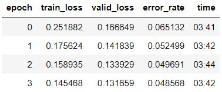

| Soort Scan | Functie | Artikel | |
|---|---|---|---|
| 0 | MRI | Hersen Tumoren | Ali Işın, Cem Direkoğlu, Melike Şah, Review of MRI-based Brain Tumor Image Segmentation Using Deep Learning Methods, Procedia Computer Science, Volume 102,2016,Pages 317-324,ISSN 1877-0509,https://doi.org/10.1016/j.procs.2016.09.407. |
| 1 | H&E gekleurde cellen | Infiltrerende lymfocyten in tumoren | Spatial Organization and Molecular Correlation of Tumor-Infiltrating Lymphocytes Using Deep Learning on Pathology Images, Cell Reports, Volume 23, Issue 1, Pages 181-193.e7, ISSN 2211-1247, https://doi.org/10.1016/j.celrep.2018.03.086. |
| 2 | X-ray | Borstkas aandoeningen | Han Liu, Lei Wang, Yandong Nan, Faguang Jin, Qi Wang, Jiantao Pu, SDFN: Segmentation-based deep fusion network for thoracic disease classification in chest X-ray images, Computerized Medical Imaging and Graphics, Volume 75, Pages 66-73, ISSN 0895-6111, https://doi.org/10.1016/j.compmedimag.2019.05.005. |
Hoi hoi,
Vandaag wil ik een voorbeeld delen van Artificiële Intelligentie (AI) in de biologie. Maar voordat ik begin, een kleine waarschuwing. In deze post komen mogelijk onbekende en moeilijke termen voor. Wanneer ik ze allemaal in deze post uit ga leggen wordt de post ietwat lang. Daarom heb ik soms een korte uitleg gegeven ,maar op andere momenten niet ,want het idee is om deze termen uitvoerig te bespreken in de volgende posts. Dat gezegd hebbende, deze post gaat over mijn eerste project dat ik gemaakt heb, namelijk een model (eigenlijk een soort van computerprogramma) dat kan voorspellen of een moedervlek goed- of kwaadaardig is 1. Hiermee was ik begonnen ,omdat de (gratis!) online cursus van Fastai 2 aanbeveelt om zo snel mogelijk te experimenteren. Zo kan je spelenderwijs leren en later, mocht je het interessant vinden, dieper in de theorie duiken.
Om het nog makkelijker te maken en sneller te kunnen beginnen met experimenteren heeft Fastai een eigen Python library (een term dat gebruikt wordt als: een uitbreiding van de programmeertaal Python). Met deze library, kun je met relatief weinig programmeerkennis een model trainen dat een voorspelling kan maken van, ja van wat niet eigenlijk. Dit kan zolang je maar genoeg voorbeelden (je data) hebt. Gelukkig hoef je niet altijd zelf je data te verzamelen, maar zijn er mensen die data gratis met de wereld delen. Tschandl et al.3 hebben plaatjes van moedervlekken bij elkaar gezocht en gelabeld (een label is de waarde die de data, in dit geval een foto, heeft). Specialisten op het gebied van moedervlekken hebben iedere foto beoordeeld als goed- of kwaadaardige moedervlek. Deze stap is erg belangrijk ,want zonder gelabelde data kun je eigenlijk geen AI model maken dat een nuttige voorspelling kan doen (met uitzondering van technieken die ongelabelde data gebruiken, maar dat is voor een volgende keer). En vaak geldt: des te meer data ,des te beter.
Nu we onze data hebben ,kunnen we bijna beginnen om een AI model te trainen. We hebben namelijk ook data nodig om ons model te evalueren. Hiervoor gebruik je data die niet is gebruikt tijdens het trainen. In de praktijk splits je daarom je data vaak in twee groepen. Een groep die je gebruikt om je model te trainen en een groep om te evalueren. Door deze splitsing evalueer je het getrainde model met data dat je model nog niet gezien heeft tijdens de training. Dat is erg belangrijk, want uiteindelijk wordt je model ook op deze manier gebruikt! Een foto die een gebruiker instuurt heeft het model nog nooit gezien en op deze foto’s wil je een accurate voorspelling doen.
Ok, nu kunnen we dan echt beginnen met het trainen van het model. Voor foto’s en plaatjes wordt (vaak) een speciale vorm model gebruikt, namelijk een convolutioneel neuraal netwerk (CNN; nog een term die ik later verder ga uitleggen, voor nu kan je een convolutie zien als een speciale rekensom). Zo ’n CNN gaan wij nu ook gebruiken (en de Fastai library maakt het ons erg gemakkelijk om dit te doen, maar de details bespreek ik weer later).
Tabel 1: Het trainen van een model. Epochs staat voor hoeveel keer je door je data heen gaat om je model te trainen. De train_loss is de loss die het model heeft op de trainingsdata en de valid_loss van je evaluatie data (hoe de loss wordt berekend ga ik later bespreken, de loss is berekend door het verschil tussen de voorspelde waarde door het model en de echte (gelabelde) waarde in een formule te stoppen). Als laatste bevat de tabel de tijd die 1 epoch duurt in minuten.

In onderstaande tabel zie je dat we (na maar een paar minuten trainen) een accuuraatheid van maarliefst 95% hebben (Tabel 1; De error rate is lager dan 0.05, wat betekent dat de accuraatheid groter is dan (1 - 0.05) * 100%). Dat is de kracht van transfer learning en trainen op een grafische kaart (GPU). Een wezenlijk probleem is echter dat de accuraatheid verbonden is aan of je model een soortgelijke moedervlek heeft gezien tijdens de training. Hoewel we dat probleem zo goed mogelijk proberen op te lossen door je data te splitsen, is het nog steeds een probleem wanneer een moedervlek er compleet anders uit ziet, dan de moedervlekken waarop je het model hebt getraind. Dat is een reden waarom deze modellen in de praktijk nog geen specialisten vervangen en waarom je dus met een gek uitziende moedervlek altijd naar een specialist moet gaan. Maar deze modellen kunnen wel als hulpmiddel dienen voor deze specialisten! Dit voorbeeld laat dus de kracht, maar zeker ook een grote uitdaging van AI zien.
Er zijn veel voorbeelden waar soortgelijke technieken worden gebruikt (zie tabel 2). De code van dit project kan je vinden op Github en je kunt het getrainde model ook testen met een foto van een eigen moedervlek of eentje van het internet (moedervlek herkenner).
Tabel 2: Voorbeelden van andere projecten waarin biologische problemen worden opgelost met afbeeldingen.
We zijn weer aan het einde gekomen en ik kan me goed voorstellen dat het duizelt van de moeilijke termen. Ik ga proberen om die termen in toekomstige berichten zo duidelijk mogelijk uit te leggen. Mochten er vragen of opmerkingen zijn, dan kunnen jullie die hieronder plaatsen! Bedankt voor het lezen en tot de volgende keer! (Smeer je goed in tegen de zon!!).
Footnotes
Dit soort modellen zijn geen vervanging van een specialist. Wanneer je een rare (moeder)vlek hebt, raadpleeg altijd een dokter.↩︎
Tschandl, Philipp, 2018, The HAM10000 dataset, a large collection of multi-source dermatoscopic images of common pigmented skin lesions, https://doi.org/10.7910/DVN/DBW86T, Harvard Dataverse, V3↩︎